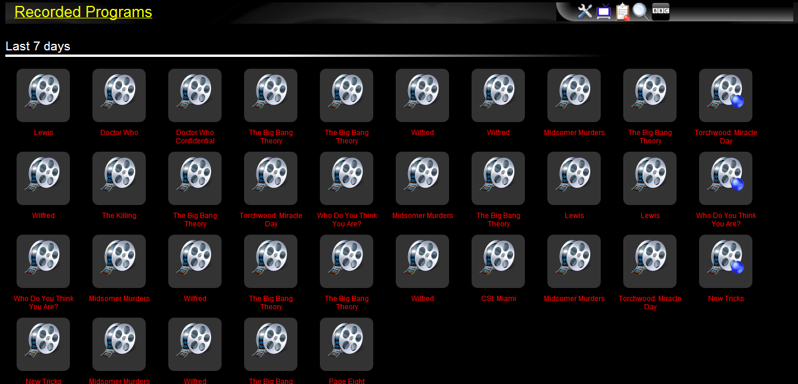

Click the "recorded programs" icon in the toolbar to bring up the list of recorded files window.
The recorded programs window is for informational use only. It shows the more recent recordings (video or audio) starting from the most recent.
Clicking on an icon brings up details of the recorded file.
If a file is no longer in the location in which it was recorded (i.e. the file has been moved or deleted), then the title under the icon will show in red. Otherwise the title is shown in white.
Icons are used to visually show what type of recording the file is: